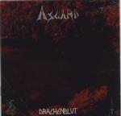

| Artist: | Asgard |
| Title: | Drachenblut |
| Label: | Dragon's Music DRMUS 002 |
| Length(s): | 68 minutes |
| Year(s) of release: | 2000 |
| Month of review: | 07/2000 |
| 1) | Blue Fire | 5.38 |
| 2) | Red Fire | 5.07 |
| 3) | Ch. I - Sigurd | 1.05 |
| 4) | Ch. II - Dragon's Blood | 3.16 |
| 5) | Ch. III - Quid | 10.59 |
| 6) | Ch. IV - Drachenfels | 4.08 |
| 7) | Ch. V - In The Lands Of The Dragon Of Midgard | 5.38 |
| 8) | Ch. VI - Initiation | 10.16 |
| 9) | Ch. VII - "I Am The Udder" | 3.18 |
| 10) | Ch. VIII - The Bathe | 2.31 |
| 11) | Memories From Sigurd's Past | 2.37 |
| 12) | Danger! (Sigurd In Love) | 4.21 |
| 13) | A Lime-leaf Was On His Back | 8.57 |